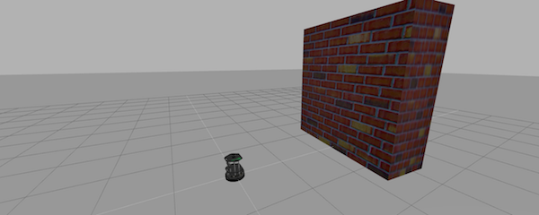
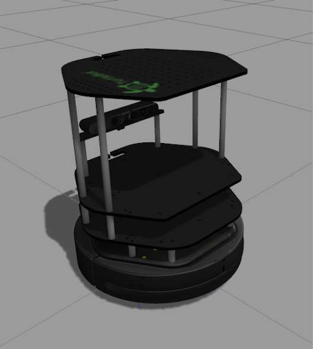
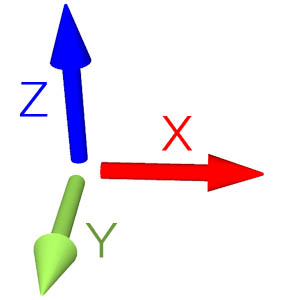

<img src="img/kobuki_wall.png" width="800"/>
<!-- <img src="img/rosject.png" width="250" style="float:left;" /> --><!-- * ROSject Link: http://bit.ly/2LM5WgR* Package Name: **turtlebot_gazebo*** Launch File: **main.launch**--><b>Estimated time to completion:</b> 2.5 hours<br><br><b>Simulation:</b> Turtlebot<br><br><b>What will you learn with this unit?</b>* What are ROS topics and how to manage them</li>* What is a publisher and how to create one</li>* What are topic messages and how they work</li>Estimated time to completion: 2.5 hours
Simulation: Turtlebot
What will you learn with this unit?
<img src="img/kobuki.jpg" width="212" height="236" />
<p style="background:#407EAF;color:white;">**Example 2.1**</p><br>Execute the following Python code <a href="#prg-2-1">simple_topic_publisher.py </a> by clicking on it and then clicking on the play button on the top right-hand corner of the IPython notebook.<br> <div class='white_bg'><img src="img/font-awesome_step-forward.png" style="float:left"/><br><br></div><br>You can also press **[CTRL]+[Enter]** to execute it.Example 2.1

<p style="background:#407EAF;color:white;">**END Example 2.1**</p>END Example 2.1
<p style="background:#3B8F10;color:white;" id="prg-2-1">**Python Program {2.1}: simple_topic_publisher.py**</p>Python Program {2.1}: simple_topic_publisher.py
#! /usr/bin/env pythonimport rospyfrom std_msgs.msg import Int32 rospy.init_node('topic_publisher')pub = rospy.Publisher('/counter', Int32, queue_size=1)rate = rospy.Rate(2)count = Int32()count.data = 0while not rospy.is_shutdown(): pub.publish(count) count.data += 1 rate.sleep()<p style="background:#3B8F10;color:white;" id="prg-2-1">**END Python Program {2.1}: simple_topic_publisher.py** </p>END Python Program {2.1}: simple_topic_publisher.py
Nothing happens? Well... that's not actually true! You have just created a topic named **/counter**, and published through it as an integer that increases indefinitely. Let's check some things.A topic is like a pipe. **Nodes use topics to publish information for other nodes** so that they can communicate.<br>You can find out, at any time, the number of topics in the system by doing a <i>**rostopic list**</i>. You can also check for a specific topic.Nothing happens? Well... that's not actually true! You have just created a topic named /counter, and published through it as an integer that increases indefinitely. Let's check some things.
A topic is like a pipe. Nodes use topics to publish information for other nodes so that they can communicate.
You can find out, at any time, the number of topics in the system by doing a rostopic list. You can also check for a specific topic.
On your webshell, type <i>**rostopic list**</i> and check for a topic named '/counter'.On your webshell, type rostopic list and check for a topic named '/counter'.
<table style="float:left;background: #407EAF"><tr><th><p class="transparent">Execute in WebShell #1</p></th></tr></table>|
Execute in WebShell #1 |
|---|
rostopic list | grep '/counter'<table class="transparent float_l"><tr><th><p style="background: #407EAF">WebShell #1 Output</p></th></tr></table>|
WebShell #1 Output |
|---|
user ~ $ rostopic list | grep '/counter'/counterHere, you have just listed all of the topics running right now and filtered with the <b>grep</b> command the ones that contain the word <i>/counter</i>. If it appears, then the topic is running as it should.You can request information about a topic by doing <i>**rostopic info <name_of_topic>**</i>.Here, you have just listed all of the topics running right now and filtered with the grep command the ones that contain the word /counter. If it appears, then the topic is running as it should.
You can request information about a topic by doing rostopic info <name_of_topic>.
Now, type <i>**rostopic info /counter**</i>.Now, type rostopic info /counter.
<table style="float:left;background: #407EAF"><tr><th><p class="transparent">Execute in WebShell #1</p></th></tr></table>|
Execute in WebShell #1 |
|---|
rostopic info /counter<table class="transparent float_l"><tr><th><p style="background: #407EAF">WebShell #1 Output</p></th></tr></table>|
WebShell #1 Output |
|---|
user ~ $ rostopic info /counterType: std_msgs/Int32Publishers: * /topic_publisher (http://ip-172-31-16-133:47971/)Subscribers: NoneThe output indicates the type of information published (**std_msgs/Int32**), the node that is publishing this information (**/topic_publisher**), and if there is a node listening to that info (None in this case).The output indicates the type of information published (std_msgs/Int32), the node that is publishing this information (/topic_publisher), and if there is a node listening to that info (None in this case).
Now, type **_rostopic echo /counter_** and check the output of the topic in realtime.Now, type rostopic echo /counter and check the output of the topic in realtime.
<table style="float:left;background: #407EAF"><tr><th><p class="transparent">Execute in WebShell #1</p></th></tr></table><br>|
Execute in WebShell #1 |
|---|
rostopic echo /counterYou should see a succession of consecutive numbers, similar to the following: You should see a succession of consecutive numbers, similar to the following:
<table class="transparent float_l"><tr><th><p style="background: #407EAF">WebShell #1 Output</p></th></tr></table>|
WebShell #1 Output |
|---|
rostopic echo /counterdata:985---data:986---data:987---data:988---Ok, so... what has just happened? Let's explain it in more detail. First, let's crumble the code we've executed. You can check the comments in the code below explaining what each line of the code does:Ok, so... what has just happened? Let's explain it in more detail. First, let's crumble the code we've executed. You can check the comments in the code below explaining what each line of the code does:
#! /usr/bin/env pythonimport rospy # Import the Python library for ROSfrom std_msgs.msg import Int32 # Import the Int32 message from the std_msgs packagerospy.init_node('topic_publisher') # Initiate a Node named 'topic_publisher'pub = rospy.Publisher('counter', Int32) # Create a Publisher object, that will publish on the /counter topic # messages of type Int32rate = rospy.Rate(2) # Set a publish rate of 2 Hzcount = Int32() # Create a var of type Int32count.data = 0 # Initialize 'count' variablewhile not rospy.is_shutdown(): # Create a loop that will go until someone stops the program execution pub.publish(count) # Publish the message within the 'count' variable count.data += 1 # Increment 'count' variable rate.sleep() # Make sure the publish rate maintains at 2 HzSo basically, what this code does is to **initiate a node and create a publisher that keeps publishing into the '/counter' topic a sequence of consecutive integers**. Summarizing:**A publisher is a node that keeps publishing a message into a topic**. So now... what's a topic? **A topic is a channel that acts as a pipe, where other ROS nodes can either publish or read information**. Let's now see some commands related to topics (some of them you've already used).So basically, what this code does is to initiate a node and create a publisher that keeps publishing into the '/counter' topic a sequence of consecutive integers. Summarizing:
A publisher is a node that keeps publishing a message into a topic. So now... what's a topic?
A topic is a channel that acts as a pipe, where other ROS nodes can either publish or read information. Let's now see some commands related to topics (some of them you've already used).
To <b>get a list of available topics</b> in a ROS system, you have to use the next command:To get a list of available topics in a ROS system, you have to use the next command:
rostopic listTo <b>read the information that is being published in a topic,</b> use the next command:To read the information that is being published in a topic, use the next command:
rostopic echo <topic_name>This command will start printing all of the information that is being published into the topic, which sometimes (ie: when there's a massive amount of information, or when messages have a very large structure) can be annoying. In this case, you can <b>read just the last message published into a topic</b> with the next command:This command will start printing all of the information that is being published into the topic, which sometimes (ie: when there's a massive amount of information, or when messages have a very large structure) can be annoying. In this case, you can read just the last message published into a topic with the next command:
rostopic echo <topic_name> -n1To <b>get information about a certain topic,</b> use the next command:To get information about a certain topic, use the next command:
rostopic info <topic_name>Finally, you can check the different options that <i>rostopic</i> command has by using the next command:Finally, you can check the different options that rostopic command has by using the next command:
rostopic -h<p style="background:red;color:white;">**IMPORTANT NOTE**</p>IMPORTANT NOTE
When you have finished with this section of the Notebook, make sure to <b>STOP</b> the previously executed code by selecting the cell with the code and clicking on the <b>Interrupt kernel</b> button at the top right corner of the Notebook. This is very important for doing the Next Unit properly.When you have finished with this section of the Notebook, make sure to STOP the previously executed code by selecting the cell with the code and clicking on the Interrupt kernel button at the top right corner of the Notebook. This is very important for doing the Next Unit properly.
<p style="background:red;color:white;">**IMPORTANT NOTE**</p>IMPORTANT NOTE
As you may have noticed, topics handle information through messages. There are many different types of messages.In the case of the code you executed before, the message type was an **std_msgs/Int32**, but ROS provides a lot of different messages. You can even create your own messages, but it is recommended to use ROS default messages when its possible. Messages are defined in **.msg** files, which are located inside a **msg** directory of a package.As you may have noticed, topics handle information through messages. There are many different types of messages.
In the case of the code you executed before, the message type was an std_msgs/Int32, but ROS provides a lot of different messages. You can even create your own messages, but it is recommended to use ROS default messages when its possible.
Messages are defined in .msg files, which are located inside a msg directory of a package.
To <b>get information about a message,</b> you use the next command:To get information about a message, you use the next command:
rosmsg show <message><p style="background:#407EAF;color:white;">**Example 2.2**</p>Example 2.2
For example, let's try to get information about the std_msgs/Int32 message. Type the following command and check the output.For example, let's try to get information about the std_msgs/Int32 message. Type the following command and check the output.
<table style="float:left;background: #407EAF"><tr><th><p class="transparent">Execute in WebShell #1</p></th></tr></table>|
Execute in WebShell #1 |
|---|
rosmsg show std_msgs/Int32<table class="transparent float_l"><tr><th><p style="background: #407EAF">WebShell #1 Output</p></th></tr></table>|
WebShell #1 Output |
|---|
user ~ $ rosmsg show std_msgs/Int32[std_msgs/Int32]:int32 dataIn this case, the **Int32** message has only one variable named **data** of type **int32**. This Int32 message comes from the package **std_msgs**, and you can find it in its **msg** directory. If you want, you can have a look at the Int32.msg file by executing the following command:In this case, the Int32 message has only one variable named data of type int32. This Int32 message comes from the package std_msgs, and you can find it in its msg directory. If you want, you can have a look at the Int32.msg file by executing the following command:
roscd std_msgs/msg/<p style="background:#407EAF;color:white;">**END Example 2.2**</p>END Example 2.2
Now you're ready to create your own publisher and make the robot move, so let's go for it!Now you're ready to create your own publisher and make the robot move, so let's go for it!
<p style="background:#EE9023;color:white;">**Exercise 2.1**</p><br><ul> <li>Create a package with a launch file that launches the code <a href="#prg-2-1">simple_topic_publisher.py</a>.</li> <li>Modify the code you used previously to publish data to the /cmd_vel topic. </li> <li>Launch the program and check that the robot moves.</li></ul>Exercise 2.1
<p style="background:#3B8F10;color:white;">**Data for Excercice 2.1**</p><br>1.- The /cmd_vel topic is the topic used to move the robot. Do a <i>**rostopic info /cmd_vel**</i> in order to get information about this topic, and identify the message it uses. You have to modify the code to use that message.2.- In order to fill the Twist message, you need to create an instance of the message. In Python, this is done like this:**var = Twist()**3.- In order to know the structure of the Twist messages, you need to use the **_rosmsg show_** command, with the type of the message used by the topic **/cmd_vel**.4.- In this case, the robot uses a differential drive plugin to move. That is, the robot can only move linearly in the **x** axis, or rotationaly in the angular **z** axis. This means that the only values that you need to fill in the Twist message are the linear **x** and the angular **z**.<img src="img/xyz.jpg" width="100"></img>5.- The magnitudes of the Twist message are in m/s, so it is recommended to use values between 0 and 1. For example, 0'5 m/s.Data for Excercice 2.1
1.- The /cmd_vel topic is the topic used to move the robot. Do a rostopic info /cmd_vel in order to get information about this topic, and identify the message it uses. You have to modify the code to use that message.
2.- In order to fill the Twist message, you need to create an instance of the message. In Python, this is done like this: var = Twist()
3.- In order to know the structure of the Twist messages, you need to use the rosmsg show command, with the type of the message used by the topic /cmd_vel.
4.- In this case, the robot uses a differential drive plugin to move. That is, the robot can only move linearly in the x axis, or rotationaly in the angular z axis. This means that the only values that you need to fill in the Twist message are the linear x and the angular z.

5.- The magnitudes of the Twist message are in m/s, so it is recommended to use values between 0 and 1. For example, 0'5 m/s.
<p style="background:#EE9023;color:white;">**END Exercise 2.1**</p>END Exercise 2.1
<p style="background:green;color:white;">Solution Exercise 2.1</p>Solution Exercise 2.1
Please Try to do it by yourself unless you get stuck or need some inspiration. You will learn much more if you fight for each exercise.Please Try to do it by yourself unless you get stuck or need some inspiration. You will learn much more if you fight for each exercise.
<img src="img/robotignite_logo_text.png"/>
Follow this link to open the solutions notebook for Unit3 Services Part1:[Topics Part1 Solutions](extra_files/unit2_topics_part1_solutions.ipynb)Follow this link to open the solutions notebook for Unit3 Services Part1:Topics Part1 Solutions
<p style="background:green;color:white;">END Solution Exercise 2.1</p>END Solution Exercise 2.1